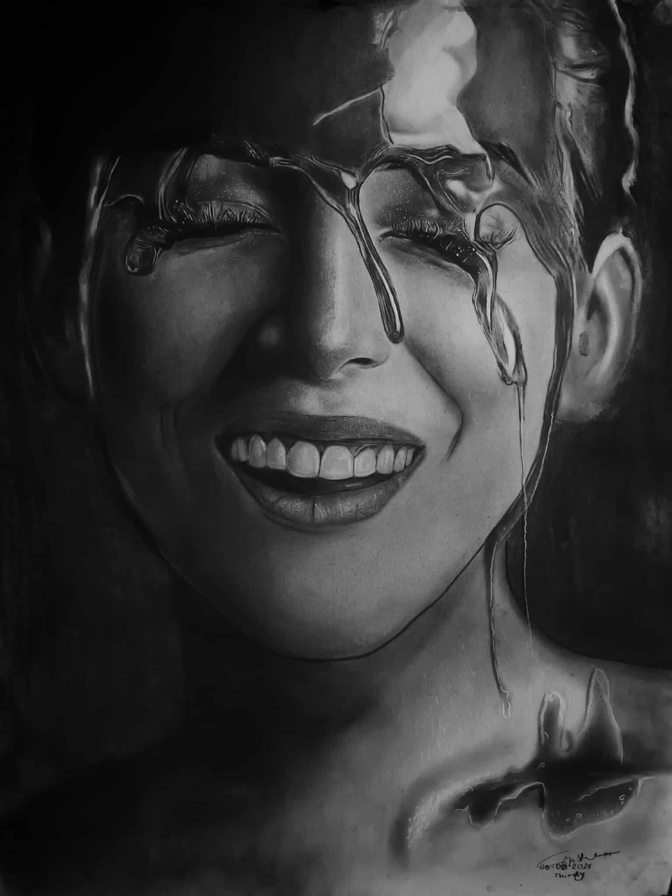

Types of Art

Charcoal Drawing
Charcoal drawing is one of the most expressive and versatile forms of art. It allows artists to create deep shadows, bold lines, and soft shading with ease. By using different types of charcoal such as vine or compressed sticks, you can experiment with textures and tones that bring a drawing to life.

Color Pencil Drawing
Color pencil art is widely appreciated for its vibrant tones and precision. With layering techniques, artists can achieve realistic shading, smooth gradients, and detailed textures. High-quality colored pencils allow for richer pigmentation and blending.

Painting (Oil / Acrylic / Watercolor)
Painting is one of the oldest and most dynamic forms of art, ranging from classical oil paintings to modern acrylics and watercolors. Each medium offers unique qualities—oils provide depth and blending time, acrylics dry quickly and allow layering, while watercolors create soft and translucent effects.

Graphite Drawing
Graphite drawing is a classic and widely practiced art form, often associated with sketching and detailed studies. It is flexible, allowing artists to create fine lines, soft shading, and intricate textures using pencils of varying hardness.

Pointillism
Pointillism is a painting technique that uses tiny dots of color placed closely together to form an image. When viewed from a distance, the dots blend visually to create vibrant scenes.

Impressionism
Impressionism focuses on capturing the fleeting effects of light and color in a scene rather than precise detail. Artists use loose brushwork and vibrant palettes.